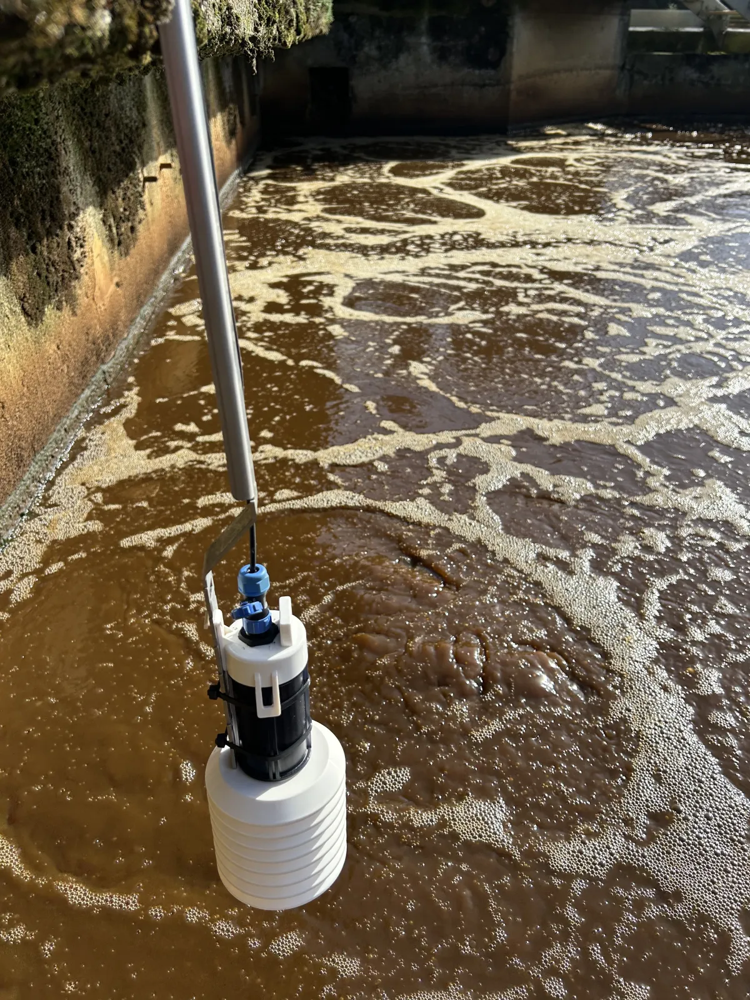

MANGA Commercial Deployment
Sentinel is an enclosed atmosphere that mixes gas, measures and evacuates when a pre-saturation threshold is met.
Swarm devices 1-4 are passively measuring free movement of air, reporting spikes of N2O as they occur above 100ppm.
